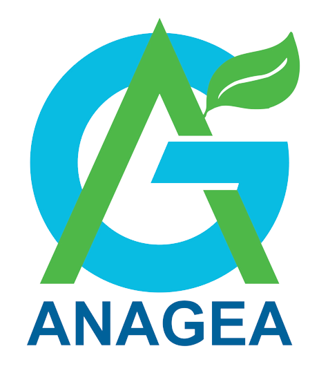
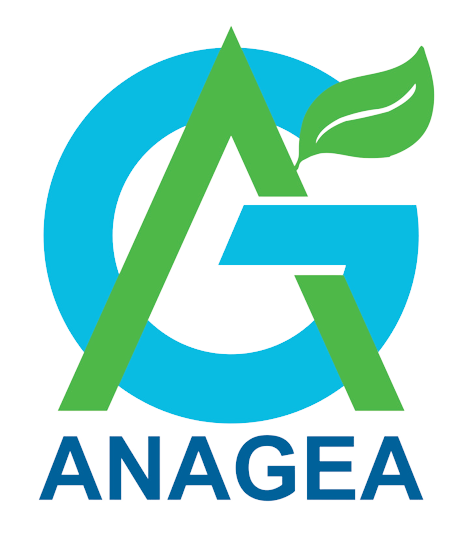

O Dia do Gestor Ambiental é uma data especial dedicada a celebrar e reconhecer o importante trabalho dos profissionais que atuam na gestão e preservação do meio ambiente. Neste dia, destacamos a relevância do papel desempenhado pelos gestores ambientais na promoção da sustentabilidade e na busca por soluções que conciliem o desenvolvimento humano com a conservação dos recursos naturais.
Esses profissionais desempenham um papel fundamental na implementação de políticas e práticas voltadas para a proteção do meio ambiente, garantindo a utilização responsável dos recursos naturais, a preservação da biodiversidade, a mitigação e adaptação às mudanças climáticas, além de promover a conscientização e educação ambiental.
No Dia do Gestor Ambiental, celebramos as conquistas alcançadas e também refletimos sobre os desafios que ainda estão por vir. É um momento para reconhecermos a importância da sustentabilidade em todas as esferas da sociedade e incentivar ações individuais e coletivas que contribuam para um futuro mais equilibrado e harmonioso com o meio ambiente.
Junte-se a nós nessa celebração e faça parte dessa causa em prol de um planeta mais saudável e sustentável para as futuras gerações!
 
